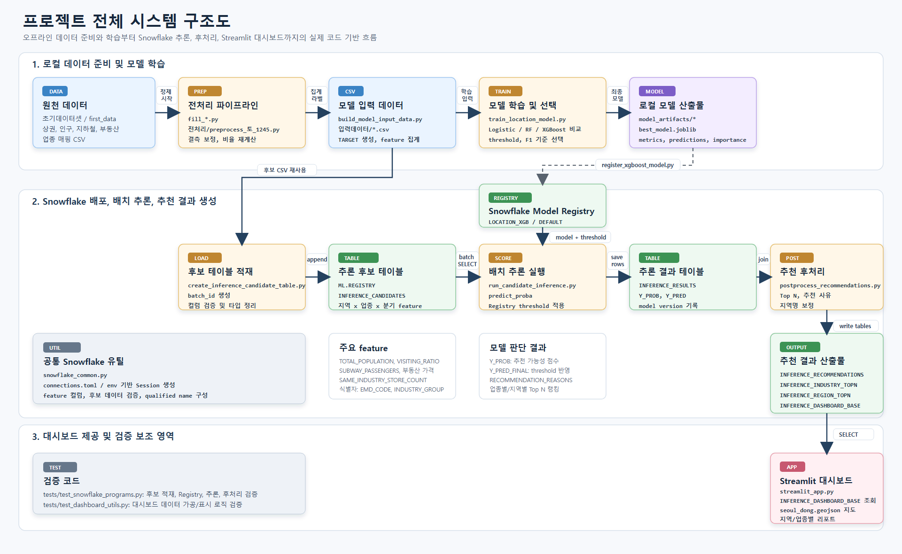
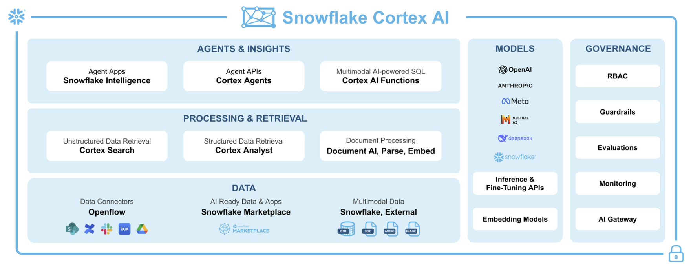
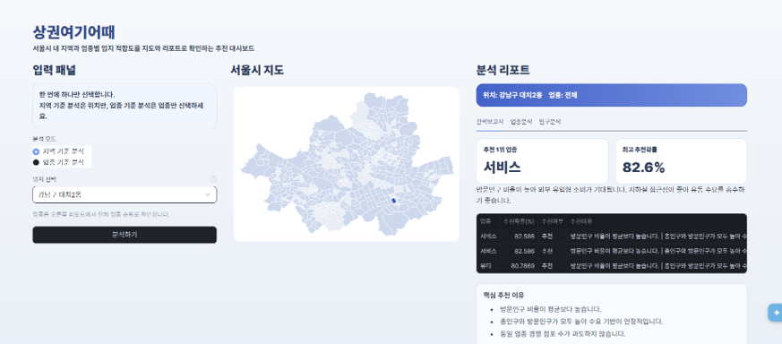
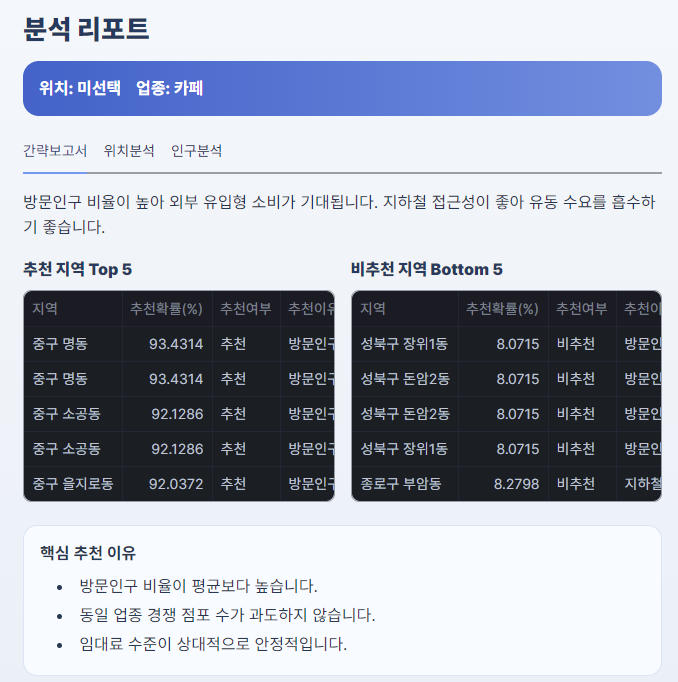

서울시 상권 데이터를 행정동, 업종, 분기 단위로 정리합니다.
Activity 07 · Snowflake Hackathon
상권 여기어때
서울시 상권 데이터를 행정동 × 업종 × 분기 단위로 통합하고, Snowflake Model Registry, Batch Inference, Streamlit Dashboard까지 연결한 상권 입지 추천 AI 서비스입니다.
업종에서 지역으로, 지역에서 업종으로 이어지는 데이터 기반 창업 의사결정

Project Introduction
창업자의 입지 선택을 경험과 직관이 아니라 데이터 기반 추천으로 바꾸는 서비스입니다
상권 여기어때는 초기 창업자와 소상공인이 서울시에서 어떤 업종을 어느 지역에 입점해야 할지 판단할 수 있도록 돕는 AI 추천 서비스입니다. 인구, 방문인구, 지하철 접근성, 부동산 가격, 경쟁 점포 데이터를 통합해 지역-업종 조합의 추천 가능성을 확률로 계산했습니다.
One Line
서울시 상권 데이터를 통합해 “업종 → 추천 지역”과 “지역 → 추천 업종”을 제공하는 Snowflake 기반 추천 대시보드
단순한 상권 데이터 조회가 아니라, 추천 확률과 이유를 함께 보여주는 창업 의사결정 지원 도구로 설계했습니다.
Logistic Regression, Random Forest, XGBoost를 비교합니다.
Model Registry와 Batch Inference로 추천 확률을 생성합니다.
Streamlit에서 지도, Top N, 추천 이유를 확인합니다.
Problem Definition
창업자는 여전히 입지와 업종 선택을 경험과 직관에 의존하고 있었습니다
초기 창업자와 소상공인은 상권 데이터를 참고해야 하지만, 실제로는 데이터 해석 경험이 부족해 주변 의견이나 감에 의존하는 경우가 많습니다. 기존 상권분석 서비스는 수치 중심이라 최종 의사결정으로 연결되기 어렵다는 한계가 있었습니다.
상권 데이터는 많지만 판단은 어렵습니다
지역과 맞지 않는 업종 선택, 유망 입지 누락, 초기 투자 비용 손실과 폐업 리스크가 모두 입지 의사결정의 불확실성에서 시작될 수 있습니다.
좋은 입지는 여러 데이터 패턴의 결합으로 설명할 수 있습니다
방문인구 비율, 지역 인구 규모, 지하철 접근성, 임대 수준, 동일 업종 경쟁 강도를 함께 학습하면 추천 가능한 지역-업종 패턴을 도출할 수 있다고 보았습니다.
문제 재정의: 창업자에게 필요한 것은 데이터 조회가 아니라 “이 업종이 어느 지역에서 잘 될 가능성이 높은지”를 바로 판단할 수 있는 추천 결과입니다.
Data Integration
서울시 상권 데이터를 행정동 × 업종 × 분기 단위로 구조화했습니다
상권 성과는 하나의 지표로 설명하기 어렵기 때문에, Snowflake 제공 데이터와 외부 공공·상권 데이터를 통합해 모델이 학습할 수 있는 후보 테이블을 만들었습니다.
Snowflake 제공 데이터
리치고 데이터, SPH 데이터 등 상권 분석에 활용 가능한 데이터 소스를 결합했습니다.
공공·상권 데이터
서울 열린데이터 광장, 인구, 방문인구, 지하철, 부동산, 경쟁 점포 데이터를 정리했습니다.
행정동 × 업종 × 분기
지역과 업종의 관계를 학습할 수 있도록 동일한 분석 단위로 집계했습니다.
TOTAL_POPULATION
지역 인구 규모
VISITING_RATIO
방문인구 비율
SUBWAY_PASSENGERS
지하철 접근성
SAME_INDUSTRY_STORE_COUNT
동일 업종 경쟁 점포 수
Recommendation Structure
업종을 입력하면 추천 지역을, 지역을 입력하면 추천 업종을 제공하는 양방향 추천 구조입니다
모델은 지역-업종 조합의 추천 가능성을 확률값으로 출력하고, 이 값을 기반으로 Top N 추천 결과와 추천 이유를 구성합니다.
업종 → 지역 추천
카페, 음식점, 뷰티 등 특정 업종을 선택하면 서울시 내에서 해당 업종에 적합한 행정동 Top N을 제공합니다.
지역 → 업종 추천
논현동, 미아동 등 특정 지역을 선택하면 해당 지역에서 성공 가능성이 높은 업종 순위를 제공합니다.
추천 결과 구성
추천 확률 Y_PROB, 최종 판단 Y_PRED, 추천 이유, 핵심 영향 Feature, 지역별·업종별 Top N 랭킹을 함께 보여줍니다.
Model Training
Logistic Regression, Random Forest, XGBoost를 비교하고 확률 기반 추천 모델을 선택했습니다
각 지역-업종 조합이 추천할 만한 조합인지 판단하기 위해 여러 모델을 비교했습니다. 최종 추천은 모델 확률값과 threshold를 함께 적용해 생성되도록 설계했습니다.
후보 데이터를 학습 가능한 feature와 target으로 구성했습니다.
Logistic Regression, Random Forest, XGBoost를 비교했습니다.
복잡한 상권 데이터의 비선형 패턴을 반영할 수 있는 모델을 최종 후보로 선택했습니다.
best_model.joblib, metrics, predictions, feature importance, threshold 정보를 정리했습니다.
System Architecture
로컬 학습부터 Snowflake 배포, 배치 추론, Streamlit 대시보드까지 연결했습니다
이 프로젝트의 핵심은 데이터 분석에서 끝나는 것이 아니라, 학습 모델을 Snowflake에 등록하고 배치 추론 결과를 대시보드에서 조회할 수 있게 만든 End-to-End 구조입니다.

전처리와 모델 학습
fill_*.py, preprocess_se_1245.py, build_model_input_data.py, train_location_model.py
배포와 추론
register_xgboost_model.py, create_inference_candidate_table.py, run_candidate_inference.py
추천 결과 제공
postprocess_recommendations.py, streamlit_app.py, INFERENCE_DASHBOARD_BASE
Snowflake Pipeline
Model Registry, Batch Inference, Streamlit in Snowflake를 연결했습니다
학습된 XGBoost 모델을 Snowflake Model Registry에 등록하고, 추론 후보 테이블에 대해 배치 추론을 실행했습니다. 이후 추천 후처리 테이블을 만들고 Streamlit in Snowflake에서 결과를 조회하도록 구성했습니다.
- Snowflake Database에 후보, 추론 결과, 추천 결과 테이블 저장
- Snowpark Python으로 데이터 처리와 Python 기반 추론 흐름 연결
- Model Registry를 통해 모델 등록과 재사용 구조 구성
- Streamlit in Snowflake로 지도와 분석 리포트 제공

로컬 모델을 Snowflake Model Registry에 등록합니다.
지역 × 업종 × 분기 후보 데이터를 Snowflake에 올립니다.
추천 확률과 최종 판단값을 추론 결과 테이블에 저장합니다.
Streamlit에서 추천 Top N과 이유를 조회합니다.
Streamlit Dashboard
추천 결과를 창업자가 바로 이해할 수 있는 지도와 리포트 화면으로 제공했습니다
모델 결과를 테이블로만 보여주지 않고, 지도, 추천 순위, 확률, 추천 이유를 함께 배치했습니다. 사용자는 지역 또는 업종을 선택하고 추천 결과를 한 화면에서 확인할 수 있습니다.

지역 기준 또는 업종 기준 분석 모드를 선택합니다.
추천 확률과 Top N 랭킹을 확인합니다.
서울시 행정동 단위 위치를 직관적으로 확인합니다.
방문인구, 지하철 접근성, 경쟁 수준 등 핵심 이유를 확인합니다.
Insights
복잡한 상권 데이터를 창업 의사결정 결과로 변환했습니다
상권 여기어때는 비전문가가 직접 여러 지표를 해석하지 않아도, 추천 결과와 이유를 통해 다음 행동을 판단할 수 있도록 설계되었습니다.
데이터 조회 도구가 아니라, 창업 의사결정 지원 도구로 설계했습니다.
Result
Snowflake 기반 End-to-End 상권 추천 AI 서비스를 구현했습니다
데이터 수집·전처리·모델 학습·Snowflake 배포·배치 추론·추천 후처리·Streamlit 대시보드까지 이어지는 실제 데이터 서비스 구조를 구현했습니다.
핵심 구현 성과
- 행정동 × 업종 × 분기 단위 학습 데이터 생성
- 인구, 방문인구, 지하철, 부동산, 경쟁 점포 데이터 통합
- Logistic Regression, Random Forest, XGBoost 모델 비교
- Snowflake Model Registry 모델 등록 및 Batch Inference 실행
- 추천 결과 Top N 테이블과 Streamlit 대시보드 구현
- 업종 → 지역, 지역 → 업종 양방향 추천 기능 구현

Demo Video
What I Learned
모델 성능만큼 중요한 것은 예측 결과를 사용자가 이해할 수 있는 추천 결과로 바꾸는 과정이었습니다
데이터를 어떤 단위로 구조화하고, 추론 결과를 어떤 테이블로 저장하며, 사용자가 어떤 화면에서 어떤 이유와 함께 판단하게 할지까지 설계해야 실제 서비스가 된다는 점을 배웠습니다.